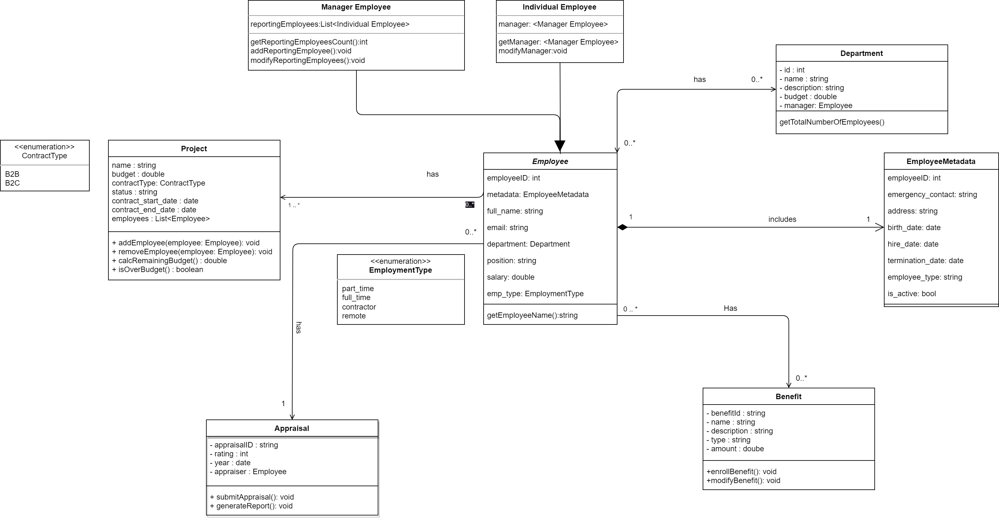
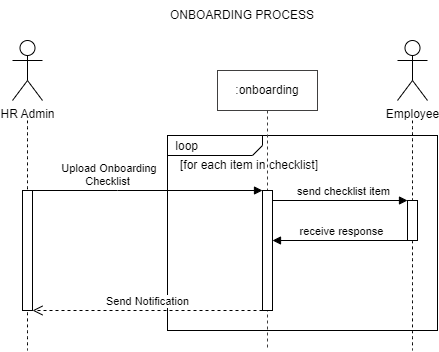
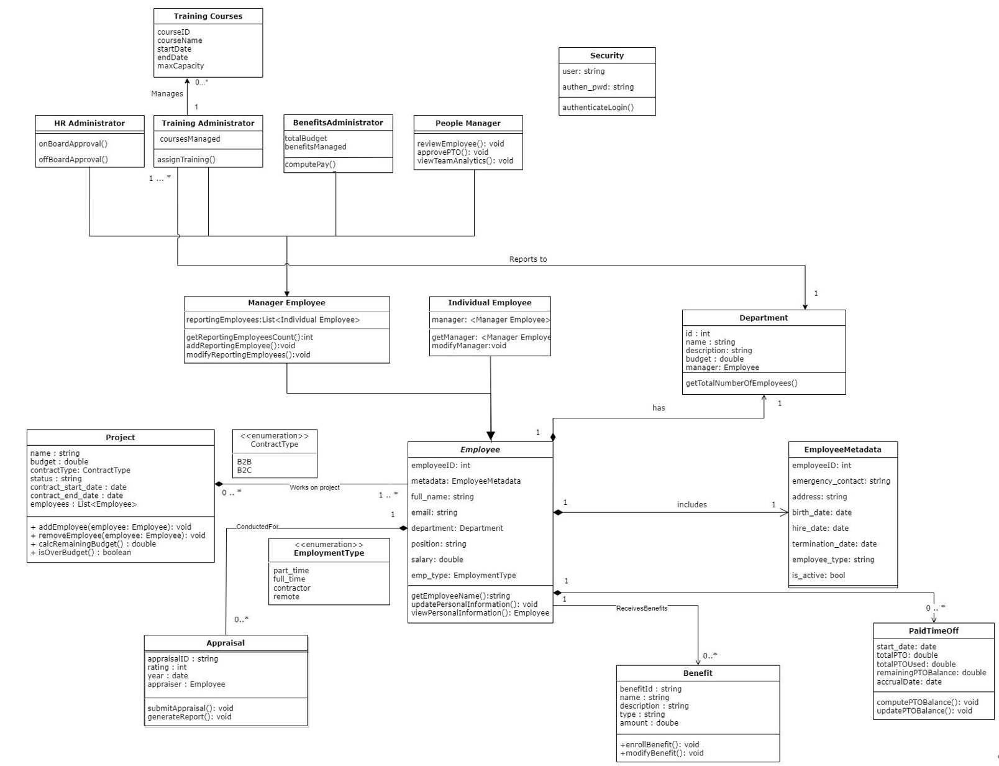

My Courseworks
(nb! coursework 1-3 are consistency, homework is seperate)
Coursework 1 Class Diagram
Human Capital Management System
Task 1 System Description
The Human Capital Management System (HCMS) is designed to streamline the administration of an organization's workforce. It is an integrated system that manages various aspects of an employee's lifecycle within the organization.
At its core:
Employee: Each individual working in the organization, linked to vital information through EmployeeMetadata. Their roles can vary from part-time to full-time, contractor, and remote.
Department: A functional division, each having a unique manager.
Project: Tasks undertaken by the organization, with specific budgets and involving multiple employees.
Appraisal: Evaluation records for each employee, tied to an appraiser.
Benefit: Perks given to employees, each with a type and amount.
External Collaborators: Non-employees who collaborate with the organization.
In terms of relationships, an employee can be part of one department but multiple projects. Projects can have various employees, and each appraisal ties back to an individual employee. Roles in the system include HR Personnel overseeing employee data, benefits, and appraisals; Managers/Team Leads managing departments, leading projects, and evaluating employees; Employees updating personal data and accessing their evaluations; and External Collaborators who update their data as needed. This system offers a holistic view of an organization's human capital, ensuring effective management.
Task 2 Class Model

Task 3 Environment
To visualize the intricacies of the HCMS, our team utilized the “Draw.io Integration” extension in Visual Studio Code for crafting the class model. Decisive Factors for Choosing it:
User-Friendly UI: The intuitive interface makes it easy to draw and manipulate diagrams. Offline Availability: The extension doesn't necessitate an active internet connection. The offline capability ensures uninterrupted modeling sessions.
Versatility: Apart from class diagrams, it supports a wide variety of diagram types, aligning with the other UML need of this course.
Integration Capabilities: It seamlessly integrates with GitHub.
Cost-Effective: It is an opensource and free tool.
Observations on Code Generation:
Draw.io not direct offer the code generation, however, it does be stored and editing as XML format code. It can be modifying the graph component with manual transcription.
Weaknesses, Expectations and Reality:
The possibility of human error arises in the process of translating the model into code. Discrepancies between the designed model and the generated code are not a flaw in the tool itself, but a result of manual transcription. Manual editing needs to be consistent with the original model.
Coursework 2 Use-case and sequence models
Task 1 System Description
The Human Capital Management System (HCMS), what we are modeling is an intricate system designed to manage various aspects of human resources within an organization. In the previous assignment, the system is structured around seven primary classes, each representing a different entity within the HR framework. This time, the system includes specific actors and use cases, aligning with typical HR operations and management activities.
Brief review: HCMS design includes a core abstract class (Employee), and its derived Manager Employee and Individual Employee. There are also classes such as Department, EmployeeMetadata, Project, Appraisal, and Benefit. These classes cover many aspects from employee personal information to department management, project execution, performance evaluation, benefits management and external cooperation. Each class has basic properties and methods to support its respective business needs.
For Use Cases:
Employee
Performance Review, Request PTO( PTO for Full-time Employees, PTO for Contractor), View Payslip, Update Personal Information, View Personal Information, Onboarding, Offboarding
Manager
View Team Analytics, Conduct Performance Review, PTO Approval
HR Administrator
Onboarding, Offboarding, Assign Workspace, Access Credentials, Assign Training (Collecting Training Feedback) Collecting Training Feedback
Training Administrator
Assign Training
Benefits Administrator
Compute Pay(Deduction)
In summary, the system model concretizes the daily operations and management activities of HCMS and forms a relatively complete set of business processes.
Task 2 Use-Case Model with Description
Model

Use case: Request PTO(Paid Timeoff)
Description: Employees use this feature to request PTO from their managers. They input dates and reasons for the PTO, which the manager then reviews. The system, integrated with the HRMS, checks the employee's PTO balance and company leave policies to validate the request. Once approved by the manager, the request is logged in the PTO system and the employee's PTO balance is updated in the HRMS. This process ensures accurate and transparent PTO management, supported by the PTORequest and Employee classes for real-time data updates.
Use case: Onboarding
Description: HR administrators use this feature to organize the needed information for onboarding new employees. This process includes the usage of the onboarding module in the HRMS system. The HR administrator uploads the checklist for a specific employee role for the newly hired employee to complete. The onboarding module allows dependency between the checklists items to save time from processing employees that do not have the correct requirements for the company. This process serves as a verification process for the information claimed by the employee during interview process.
Use case: View personal Information
Description: Employees can access and review their comprehensive personal information stored in the system. It is a critical feature for maintaining transparency and accuracy in employee records. Employees can view various details such as contact information, emergency contacts, residential address, and birth date. It is particularly integrated with the Employee and EmployeeMetadata classes, ensuring that the data reflects the latest updates made by the employees or HR administrators.
Task 3 Sequence Diagram
(1) System Level Diagram

This sequence diagram illustrates various use cases mentioned before, involving roles such as Employee, HR Admin, Training Administrator, Manager, and Benefits Administrator. Key processes include onboarding, where employees submit applications and personal information via the Boarding Portal to the HR Administrator, who then allocates resources and coordinates training. Employees have options to edit personal information, view payslips, and apply for PTO through relevant portals. The Benefits Administrator plays a role in processing PTO and computing pay, with the Manager overseeing team analytics and approvals. The process for an employee's resignation mirrors the onboarding steps, utilizing the same portals for application submission and feedback.
(2) PTO Request Process Diagram

Initiation: An Employee submits a PTO request through a digital platform.
Manager Review: The Manager reviews the request, considering team workload and existing commitments.
Availability Check: The PTO System queries the HRMS to confirm the Employee's available PTO balance.
Approval Decision:
If Approved: The HRMS updates the PTO balance, and the Manager notifies the Employee of the approval.
If Denied: The Manager may suggest alternate dates or provide reasons for denial to the Employee.
Record Keeping: Approved PTO is recorded in the HRMS for accurate tracking.
This streamlined process balances organizational needs with employee requests, ensuring efficient management of PTO.
(3) Employee Onboarding Diagram

The HR Administrator prepares the onboarding checklist for newly hired employees.
The HR administrator then uploads the checklist to the onboarding module in the HCMS system. Each item in the onboarding checklist is sent to the employee.
An item does not equate to a single task but rather a task or group of tasks that needs or can be accomplished at the same time.
Items are separated based on its dependency to the previous item. Example: The company will only start onboarding an employee after submitting a legal residence permit or a security clearance permit.
Once the items are completed the HR Admin is notified.
Coursework 3 State charts & Application Class Model
Task 1 System Description
The Human Capital Management System (HCMS) is a comprehensive model designed to streamline human resource management in an organization. Building upon the foundation of the previous assignment, which introduced seven core classes representing key HR entities, this iteration of the system integrates specific actors and use cases. These additions are tailored to reflect common HR functions and management processes, providing a more practical and operationally aligned framework.
Brief Review of Assignment 1&2：
The HCMS is designed with a core abstract class, 'Employee' along with other vital classes like 'Department', 'EmployeeMetadata', 'Project', 'Appraisal', and 'Benefit'. Employee is divided into 2 distinct subclasses: Individual Employee and Manager Employee. Individual employees are the employees with generic functions in the company. Manager Employees on the other hand are employees that handle other employees. Manager employees are further broken down into different types as there are many types of managers that the system needs in order to function. These are HR Administrators, Benefits Administrator, Training administrator and People Manager. The first 3 types are self explanatory, for the People Manager, these are the managers that handle other employees in a project or department. These classes encompass a range of functions from personal employee details to managing departments, projects, performance evaluations, and benefits.
For practical applications, the system includes various methods: Employees can review performances, request PTO, view and update personal information, and participate in onboarding and offboarding. Managers focus on team analytics, performance reviews, and PTO approvals.
The HR Administrator handles onboarding, offboarding, workspace assignments, access credentials, and training tasks, including feedback collection.
Training Administrators are responsible for assigning training, while Benefits Administrators manage payroll computations, including deductions.
Overall, this system models the everyday operations and management activities within HCMS, offering a comprehensive suite of business processes.
Here are the key states (outlined as bold) and the key operations for each of them:
PTO Request Initiated: Starting point for creating a PTO request.
PTO Request Created: The PTO request is drafted and may be saved for later submission.
Manager Review Pending: The PTO request is awaiting approval or rejection by the manager.
PTO Review Completed: Outcome of the review process; the request is either processed for approval or marked as rejected.
PTO Review Rejected: If rejected, the request can be edited and resubmitted.
Not Enough PTO: The request is rejected due to insufficient PTO balance.
PTO Confirmed: Approved PTO is recorded and the employee's PTO balance is updated.
On PTO: The employee is currently on approved PTO.
PTO Completed: The PTO period has concluded.
Guards like "if approved" or "if not approved" are shown in brackets, indicating decision points. This diagram also assumes that the system checks for rescheduling options if the PTO is not approved, and that the employee will be notified of the PTO status accordingly.
Task 2 State Chart

Task 3 Application Class Model

Homework
Question Description
Task #1 (3 points): Create a domain class model for the system described below. Fix all the assumptions that you make explaining why you made them (textual description). The reason can be that you asked the customer or the purpose of the model. This will make your solution clearer in case of under-specifications. Note that the text may contain irrelevant information. The exercise requires you to select the information that is really relevant for building the domain model.
Bank Information System
A bank plans to develop an Information System to manage its customers. This system will keep track of all the operations of each customer. The system should maintain the personal data of the customers (tax code, name, surname, date of birth, age, medical insurance code). Each customer is univocally identified by its tax code. The system maintains a list of consultants characterized by name, surname, date of birth, age, professional-ID, type of consultant (Generic or Loan Specialist) and level of career (Junior or Senior). Consultants are univocally identified by their professional-ID. The age of customers and consultants is continuously updated as the difference between the current date and the date of birth. The system keeps a catalogue of all the financial items available in the bank. A name and a type (which can be stock or bond) characterize a financial item. Any Junior consultant can enter a consultant and a financial item in the system.
When a new customer wants to be registered into the bank, a customer folder is opened by a Junior consultant, and the personal data of the customer (tax code, name, surname, date of birth, medical insurance code) and the Junior Consultant opening the folder are specified in the folder. At the same time, a Senior Generic consultant is assigned to the customer who will follow the customer. The Junior consultant specifies the Senior Generic Consultant assigned to the customer in the customer folder. A customer can contact Junior consultants who can book an appointment with her Senior Generic consultant.
During an appointment with the Senior Generic consultant, the customer: (i) can ask for a loan and/or (ii) can buy financial items.
(i) The customer needs a loan. In this case, the consultant books an appointment specifying a date and an available Senior Loan Specialist consultant. A Senior Loan Specialist consultant can open a loan. A loan specifies the Loan Specialist consultant who opened it, the customer, has a duration and can be of different types (Unsecured personal loan, Secured personal loan, Fixed-rate loan, Variable-rate loan, Debt consolidation loan, Co-sign loan, Personal line of credit). The loan keeps track of the Career Check and the Medical History Check conducted on the customer. These checks are managed outside the system but the system keeps track about the status of these checks that could be “under review”, “passed” or “failed”. Only when the first two checks are assigned to the status “passed” an assessment team can conduct the Overall Assessment. The Overall Assessment is assigned to 3 reviewers (taken from the list of all Senior Loan Specialist consultants in the bank). Each reviewer gives a score from 1 to 5 characterizing the risk of the operation for the bank, from low risk (1) to high risk (5). The Overall Assessment can be in the status “under review” if at least one reviewer did not provide her score, or “passed” if all the reviewers provided their score and the average is lower than 3, or “failed” if all the reviewers provided their score and the average is higher than or equal to 3. The Senior Loan Specialist consultant opening the loan takes care of updating the status of the checks (initially all set to “under review”) and of assigning the reviewers (the reviewers are assigned only when both the Career Check and the Medical History Check are assigned to the status “passed”).
(ii) The customer decides to buy financial items. Each financial item in a customer folder should specify an amount. The same financial item cannot appear in the same folder with different amounts. The Senior Generic consultant of a customer can add financial items to the customer folder.
Any consultant can have 5 appointments per day. An appointment has a duration of 1 hour and the appointments are scheduled at the hour between 9:00 and 14:00. The customer folder contains all information about financial items with amounts bought by the customer and also the loans with the status of checks and assessments. Each consultant can see the list of consultants, and the list of financial items available in the bank, and, by providing the tax code of the customer, the entire content of each customer folder in one single view.
Grading criteria:
Classes correctly identified
Relations correctly identified
Multiplicities correct
Attributes correctly identified
Correct use of other elements of a class model
Simplicity of the overall model
Task #2 (2 points): Prepare an object model for the class model above.
Task #3 (3 points): Prepare a use-case model (diagram and descriptions for at least two use-cases) for this system.
Grading criteria:
Use-cases are correctly identified
Relations correctly identified
Correct use of other elements of a use-case model
Simplicity of the overall model and (consistency of) level of details of its components
Task #4 (2 points): Prepare an activity diagram for the part of the system above (select the level of detail yourself – mention this as a description to your model).
Grading criteria:
Activities are correctly identified
Order of activities and actors with whom they are associated are unambiguous
Correct use of other elements of activity diagram
Overview
For Bank Information System
Define some assumptions
Consultant Info:
Basic attribute: name, surname, date of birth, age, professional-ID, type of consultant
Set 2 consultant type: "generic", "loan specialist",
With 2 levels "Junior", "Senior" , with different permissions.
Customer Info
Basic attribute: tax code(univocally identified), name, surname, date of birth, age(calculate by BOD), medical insurance code
Customer Folder
Opened by Junior consultant for new registered bank
Specify the basic personal data of customer(tax code, name, surname, date of birth, medical insurance code)
"Junior consultant" assign a "Senior Generic Consultant to customer"
The assigned Senior Generic Consultant
Book an appointment with assigned Senior Generic Consultant via contacting Junior consultants.
Loan Assessment Process:
Involves the consultants that implies need for tracking and updating the status of each loan application.
With 3 status "under review", "passed" or "failed"
Initially status all "under review"
2 Check type: "Career Check", "Medical History Check", assessment both otherwise in "under review"
"Career Check", "Medical History Check" are managed outside the system,but the system keeps track about the status of these checks.
Overall Assessment is assigned to 3 reviewers (taken from the list of all Senior Loan Specialist consultants)
Senior Loan Specialist consultant opening the loan takes, assigning the reviewers, updating the status of the checks
Assign a reviewers only if "Career Check", "Medical History Check" are "passed"
Each Reviewer Grade from 1 to 5, i.e. low to high risks. Pass if average over 3.
Loan Type
Unsecured personal loan, Secured personal loan, Fixed-rate loan, Variable-rate loan, Debt consolidation loan, Co-sign loan, Personal line of credit
Financial Item Restrictions:
Each item can only have 1 amount per customer folder, to maintain consistency, also avoid duplication.
Appointment Management:
Set the appointment management mechanism, ensure each consultant does not exceed 5 appointments daily, also not exceed 1 hour per time.
Between 9:00 and 14:00
Consultant Access Restrictions:
Consultants can access customer folders via tax code, also access the consultant list and available financial items list
Financial Items
Type: stock, bond, term deposit, futures
Add in the customer folder via " Senior Generic consultant "
Each financial item in a customer folder should specify an amount.
The same financial item cannot appear in the same folder with different amounts.
Task 1: Domain Class Model

Task 2: Object Model

Task 3: Use-case Model

Use-cases Descriptions:
Keeps Track About the Status of Checks
Tracks and updates the statuses of Career Check and Medical History Check for loan applications.
Open Loan
Enables Senior Loan Specialist Consultants to initiate and create new loan applications for customers.
See the Entire Content of Each Customer Folder in One Single View
Allows authorized consultants to access comprehensive customer folder details in a unified display.
Task 4: Activity Diagram

Description: This activity diagram offers a detailed view of the system's workflow across 8-10 levels. It breaks down processes and decisions, providing a comprehensive understanding of the system's operations.
Feedbacks
Coursework 1
Few comments about the textual description:
Texual description is missing some information like what are the
List of attributes of each entity (class)
List of enumeration is not mentioned for EmploymentType and ContractType
Benefit association with Employee is not clarified
Few comments about the model:
There is no need to list the association as attributes. For example, no need to add "appraiser: Employee" or "employee: List
", etc... Association between Department and Manager Employee classes is missing, similarely, association between Individual Employee and Manager Employee is missing.
From the diagram, multiplicity for a department is 0..* which mean that an employee can be created and not assigned to a department, or can be assigned to multiple departments, however, in the text, it is mentioned that an employee can be part of one department. That is a bit conflicting.
No derived attributes, qualifier was implemented in the model
Coursework 2
Task 1:
The system description is good and relevant to what you model, but I feel you are describing the diagrams (models) not the system
Task 2:
The generalization between Manager and Employee is incorrect. Manager can do special use cases which can't be done by the employee. I think the arrow should be the other way around, because the manager is also an employee, and can do everything an employee can do.
Some use cases are having invalid naming, it is usually should have a verb and something, for example ""do something"". It can't be just ""Deductions"", ""PTO for xxx"".
HR/Training/Benefits Administrator, are also an employees i think, so generalization is needed to employee actor.
The use case description should follow a standard template that have (Name, Actors, Triggers, Preconditions, Post-Conditions, Success scenario, and alternative flows)
Task 3:
Sequence diagram should represent one use case ideally. In your first diagram "System Level Diagram", It has multiple use cases at once. Moreover, it has so many actor interactions rather than system interactions(recommendation, no deductions, because next diagrams are specific to one use case).
In the second diagram, When the Employee submits the PTO, it is submitted to the system not to the manager. Later the manager approve/reject the request.
Responses should be modelled with dotted arrow, but I see that some responses are modelled with a solid arrow.
Coursework 3
Task1:
Excellent
Task 2:
"Manager review"label for the state is in-compliant with naming conventions required forstates(state by which the object can be described)
Task 3:
Excellent
Task 4:
was expected that you test one ofmodelling tools and its own in-built capabilities,but considering the current state of affairs -your option is also valid;task#5:OK;Overall,very good job!Bonus points for Task#6 are added to the respective section in Moodle
Homework
Task 1:
The class names should not have spaces, because it should match the generated code in real life applications.
Association between LoanSpecialistConsultant and Reviewers should not be generalization. You add multiplicity, so probably it is a mistake.
Association between LoanSpecialistConsultant and Reviewers should be one-to-many, one review is assigned to one senior loan specialist, and one senior loan specialist is assigned to many reviews
Handling the requirement for "max 5 appointments per day per consultant" using multiplicity is not quite accurate. Multiplicity manage the association itself, so based on what you did, one consultant can attend maximum 5 appointments during his life time.
Task 2:
Well Done!
OK, now i understood that Reviewers are classes of LoanSpecialistConsultant as you did in the first diagram. If so, generalization association should not have multiplicity. Still, how do you track the reviews itself (reviewers score, score date, etc...)
Task 3:
What is Loan actor means? it is not clear?
Actors should be located outside the system boundary. I can see "Reviewers" actors are inside.
The use case description should follow a standard template that have (Name, Actors, Triggers, Preconditions, Post-Conditions, Success scenario, and alternative flows)
Task 4:
Some of the activity order is incorrect. For example, overall assessment is done after all reviewers add their reviews to the system, not before.